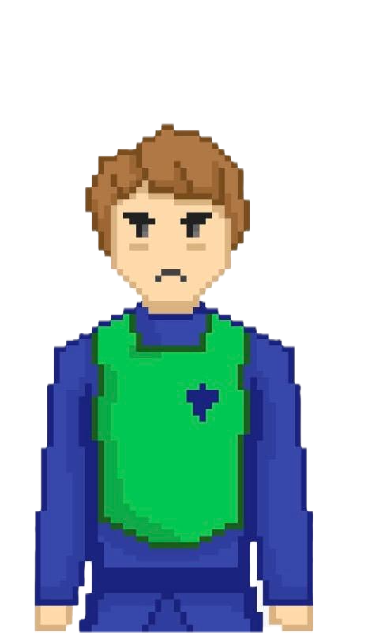
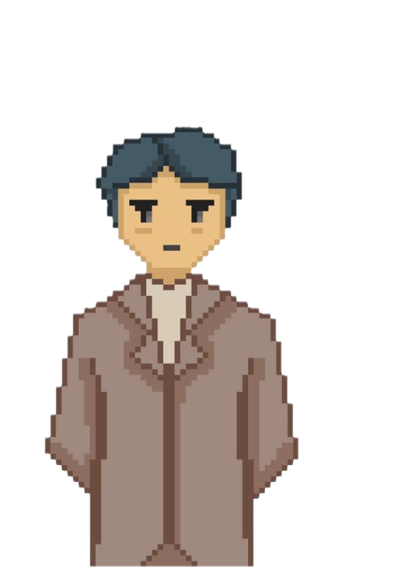

Aunque no tienes totalmente claro lo que está pasando, definitivitamente no puedes dejar a Saimon a su suerte.
Tomas el valor para contrariar
al Orangután y no entregarle el periódico.
El Orangután, firme y contundente, amenaza de, que no retractarte, también tomará las mismas medidas contigo..